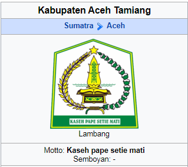

Aceh Tamiang
SEJARAH
Sebelum Merdeka
Sebelum kemerdekaan Kerajaan Tamiang pernah mencapai puncak kejayaannya dibawah pimpinan seorang Raja Muda Setia yang memerintah selama tahun 1330 - 1366 M.[1] Pada masa itu kerajaan tersebut dibatasi:
1. Sungai Raya/Selat Malaka di bagian Utara
2. Besitang di bagian Selatan
3. Selat Malaka di bagian Timur
4. Gunung Segama (Gunung Bendahara/Wilhelmina Gebergte) di bagian Barat.
Pada masa Kesultanan Aceh, Kerajaan Tamiang telah mendapat cap Sikureung dan hak Tumpang Gantung (Zainuddin, 1961: 136-137) dari Sultan Aceh Darussalam atas wilayah Negeri Karang dan Negeri Kejuruan Muda. Sementara negeri Sultan Muda Seruway, Negeri Sungai Iyu, Negeri Kaloy, dan Negeri Telaga Meuku merupakan wilayah-wilayah yang belum mendapat cap SIkureung. Karena itu negeri-negeri tersebut dijadikan sebagai wilayah pelindung bagi wilayah yang telah mendapat cap SIkureung.
Pada tahun 1908, dengan berlakunya Staatblad No.112 tahun 1878, maka wilayah Tamiang dimasukkan ke dalam Geuverment Aceh en Onderhoorigheden. Maksudnya adalah, Tamiang berada dibawah status hukum Onderafdelling.[1] Dalam Afdeling Oostkust Van Atjeh (Aceh Timur) beberapa wilayah Landschaps berdasarkan Korte Verklaring diakui sebagai Zelfbestuurder, dengan status hukum Onderafdelling Tamiang, termasuk wilayah-wilayah:
a. Landschap Karang
b. Landschap Seruway/Sultan Muda
c. Landschap Kejuruan Muda
d. Landschap Bendahara
e. Landschap Sungai Iyu, dan
f. Gouvermentagebied Vierkantepaal Kualasimpang.
Asal kata "Tamiang"
Nama Tamiang tumbuh dari legenda "Te-Miyang" atau "Da-Miyang" yang berarti tidak kena gatal atau kebal gatal dari miang bambu. Hal tersebut berhubungan dengan cerita sejarah tentang Raja Tamiang yang bernama Pucook Sulooh. Ketika masih bayi, ia ditemukan dalam rumpun bambu betong (istilah Tamiang adalah bulooh) oleh seorang raja berjulukan "Tamiang Pehok". Menginjak dewasa, Pucook Sulooh dinobatkan menjadi Raja Tamiang bergelar "Pucook Sulooh Raja Te-Miyang", yang artinya "seorang raja yang ditemukan di rumpun rebong, tetapi tidak kena gatal atau kebal gatal".
Menurut sumber lain, kata Tamiang berasal dari kata “Da Miang”. Sejarah menunjukkan tentang eksistensi wilayah Tamiang melalui prasasti Sriwijaya. Tak kurang pula sastra tulis Cina karya Wee Pei Shih mencatat pula keberadaan negeri Kan Pei Chiang (Tamiang), atau Tumihang dalam Kitab Negara Kertagama. Daerah ini juga berjuluk Bumi Muda Sedia, sesuai dengan nama Raja Muda Sedia yang memerintah wilayah ini selama 6 tahun (1330-1336). Raja ini mendapatkan cap Sikureung dan hak Tumpang Gantung dari Sultan Aceh atas wilayah Karang dan Kejuruan Muda kala itu.[1] Selengkapnya, data-data tentang Kerajaan Tamiang setidaknya termaktub dalam:
1. Prasasti Sriwijaya yang diterjemahkan oleh Prof. Nilkanta Sastri dalam The Great Tamralingga (capable of) Strong Action in dangerous Battle (Moh. Said, 1961:36).
2. Data kuno Tiongkok (dalam buku Wee Pei Shih) ditata kembali oleh I.V.Mills, 1937, halaman 24, tercatat negeri Kan Pei Chiang (Tamiang) yang berjarak 5 kilometer (35 mil) dari Diamond Point (Posri).
3. Kerajaan Islam Tamiang dalam The Rushinuddin's Geographical Notices (1310 M).
4. Tercatat sebagai "Tumihang" dalam syair 13 buku Nagara kertagama (M.Yamin, 1946: 51).
5. Benda-benda peninggalan budaya yang terdapat pada situs Tamiang (Penemuan T. Yakob, Meer Muhr, serta Sartono, dkk).
Berkaitan dengan data-data tersebut dan ditambah penelitian terhadap penemuan fosil sejarah, maka nama Tamiang dipakai menjadi usulan bagi pemekaran status wilayah Pembantu Bupati Aceh Timur Wilayah-III, yang meliputi wilayah bekas Kewedanaan Tamiang.
Pemekaran
Tuntutan pemekaran daerah di Propinsi Daerah Istimewa Aceh sebenarnya telah dicetuskan dan diperjuangkan sejak 1957 awal masa Propinsi Aceh ke-II, termasuk eks-Kewedanaan Tamiang diusulkan menjadi Kabupaten Daerah Otonom. Usulan tersebut lantas mendapat dorongan semangat yang lebih kuat lagi sehubungan dengan keluarnya ketetapan MPRS hasil Sidang Umum ke-IV tahun 1966 tentang pemberian otonomi seluas-luasnya. Dalam usulnya mengenai pelaksanaan otonomi secara riil dengan Memorandum Nomor B-7/DPRD-GR/66, Dewan Perwakilan Rakyat Daerah-Gotong Royong (DPRD-GR) Propinsi Daerah Istimewa Aceh mengusulkan sebagai berikut:
1. Bekas Kewedanaan Alas dan Gayo Lues menjadi Kabupaten Aceh Tenggara dengan ibu kotanya Kutacane.
2. Bekas daerah Kewedanaan Bireun, menjadi Kabupaten Djeumpa dengan ibu kotanya Bireun.
3. Tujuh kecamatan dari bekas Kawedanaan Blang Pidie menjadi Kabupaten Aceh Barat Daya dengan ibu kotanya Blang Pidie.
4. Bekas Daerah "Kewedanaan Tamiang" menjadi Kabupaten Aceh Tamiang dengan ibu kotanya Kualasimpang.
5. Bekas daerah Kewedanaan Singkil menjadi Kabupaten Singkil dengan ibu kotanya Singkil.
6. Bekas daerah Kewedanaan Simeulue menjadi Kabupaten Simeulue dengan ibu kotanya Sinabang.
7. Kotif Langsa menjadi Kotamadya Langsa.
Sebagian besar usulan tersebut sudah menjadi kenyataan namun usulan mengenai Tamiang belum dikabulkan. Sebagai tindak lanjut dari cita-cita masyarakat Tamiang, maka pada era reformasi, sesuai Undang-Undang No. 22/1999 tentang Pemerintahan Daerah, maka keinginan Tamiang untuk menjadi daerah otonomi terbuka kembali dan mendapat dukungan melalui:
1. Bupati Aceh Timur dengan surat No. 2557/138/tanggal 23 Maret 2000 ke DPRD Kabupaten Aceh Timur tentang usul peningkatan status Pembantu Bupati Wilayah-III Kuala Simpang menjadi Kabupaten Aceh Tamiang.
2. DPRD Kabupaten Aceh Timur dengan surat No. 1086/100-A/2000, tanggal 9 Mei 2000, tentang persetujuan peningkatan status Kabupaten Aceh Tamiang.
3. Surat Bupati Aceh Timur, No. 12032/138 tanggal 4 Mei 2000 kepada Gubernur Daerah Istimewa Aceh tentang peningkatan status Kabupaten Aceh Tamiang.
4. Surat Gubernur Daerah Istimewa Aceh No. 138/9801 tanggal 8 Juni 2000 kepada DPRD Propinsi Daerah Istimewa Aceh tentang peningkatan status Kabupaten Aceh Tamiang.
5. Surat DPRD Daerah Istimewa Aceh No. 1378/8333 tanggal 20 Juli 2000 tentang persetujuan peningkatan status Kabupaten Aceh Tamiang.
6. Surat Gubernur Daerah Istimewa Aceh No. 135/1764 tanggal 29 Januari 2001 kepada Menteri Dalam Negeri dan Otonomi Daerah Republik Indonesia Cq. Dirjen PUMD tentang usul peningkatan status Daerah Pembantu Bupati dan Kota Adminstrasi menjadi Daerah Otonom.